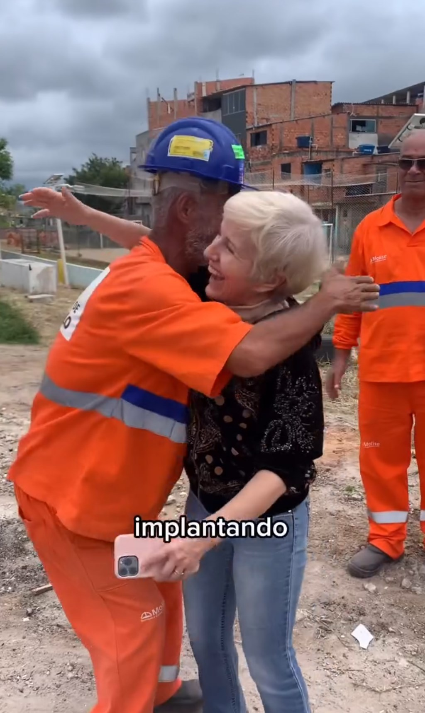
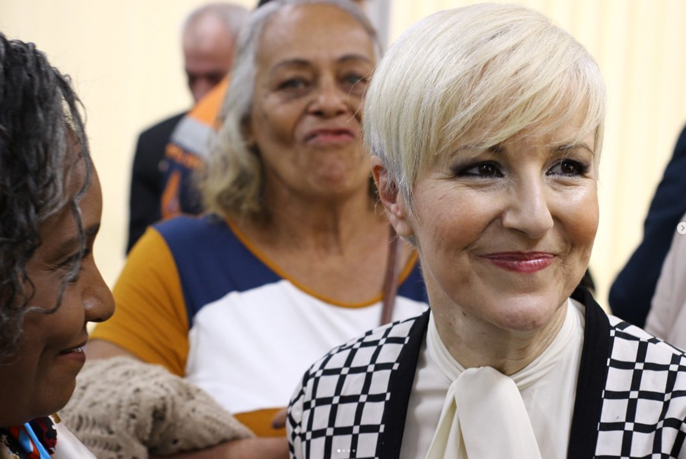

Advogada, professora, autora da 1ª Lei de Liberdade Religiosa do Brasil e ex-Subprefeita de São Miguel Paulista. Uma atuação parlamentar técnica, combativa e presente em todo o Estado de SP.
Pergunte à Dra. Damaris
Liberdade Religiosa
Mulher Segura em Bares
Uma voz firme pela proteção das mulheres, das crianças e pela liberdade de consciência em São Paulo.
Acolhimento imediato a vítimas de violência doméstica e garantia de autonomia financeira.
Combate rigoroso ao abuso sexual infantil com ações educativas nas escolas públicas paulistas.
Autora do Código Estadual de Liberdade Religiosa, garantindo o respeito a todas as crenças.

Hoje, a atuação combina a rotina parlamentar com presença nos municípios e articulação para transformar demandas locais em políticas públicas.
Coordenação da frente parlamentar ativa na legislatura vigente.
Escuta de comunidades, entidades e lideranças da zona leste e do interior.
Informação clara sobre leis, projetos e próximos passos.
De Vitória da Conquista para a Assembleia Legislativa de SP: conheça a trajetória marcada pela coragem, técnica jurídica e liderança comunitária.
Nascida em Vitória da Conquista (BA), mudou-se para São Paulo há 24 anos. Advogada com pós-graduação em Direitos Fundamentais (Univ. de Coimbra - Portugal) e Direitos do Consumidor, e Mestranda em Direito.
Pioneira na presidência da Comissão de Liberdade Religiosa e Direitos Humanos da OAB-SP, atuando na defesa intransigente do direito de crença, igualdade e acolhimento institucional.
Eleita com 45.103 votos. Presidiu frentes parlamentares de combate ao abuso sexual infantil, combate à violência doméstica e liberdade religiosa, aprovando leis de relevância nacional.
Atuação marcante na gestão pública da Zona Leste de SP. Comandou a macrodrenagem do Córrego Una (obra de R$ 4 milhões contra enchentes), pavimentação e revitalização do comércio local.
Assumiu o segundo mandato na Assembleia Legislativa. Atualmente coordena a Frente Parlamentar do Empreendedorismo Feminino e atua como suplente nas Comissões de Saúde, Finanças e Transportes.
Confira o resultado do trabalho da Dra. Damaris Moura aprovado e em vigor em todo o Estado de São Paulo.
1ª Lei do gênero no Brasil! Institui 75 artigos garantindo o livre exercício da fé, a laicidade do Estado e estabelece multas administrativas de até R$ 87 mil contra atos de intolerância religiosa.
Capacitação obrigatória nas escolas estaduais paulistas para ajudar crianças e adolescentes a identificar sinais de abuso sexual e violência intrafamiliar, estimulando a denúncia segura.
Coautoria. Obriga estabelecimentos de lazer, bares e casas noturnas a adotar medidas imediatas de auxílio e proteção a mulheres que se sintam em situação de risco ou assédio.
Institui no calendário oficial de São Paulo o dia de conscientização e combate à violência doméstica e intrafamiliar, unindo a sociedade civil e poder público no apoio às vítimas.
Reconhecimento oficial do trabalho voluntário promovido por milhares de jovens durante períodos de férias, prestando assistência social, reformas de casas e apoio a comunidades carentes.
Destinação de R$ 4 milhões em obras no Córrego Una (São Miguel Paulista), além de emendas parlamentares para hospitais e infraestrutura em Cerquilho, Castilho, Birigui e dezenas de municípios.
Palavra dada é compromisso honrado. Confira a confirmação direta das principais promessas transformadas em leis promulgadas e ações efetivas em São Paulo.
| Promessa / Campanha | Status | Detalhes & Leis Promulgadas |
|---|---|---|
| Lei de Liberdade Religiosa | CUMPRIDA | Lei 17.346/2021 — Primeira do país em âmbito estadual (Código de Liberdade Religiosa). |
| Proteção de Mulheres em Bares/Restaurantes | CUMPRIDA | Lei 17.621/2023 — Coautoria do Protocolo Mulher Segura nos espaços públicos. |
| Prevenção ao Abuso Infantil nas Escolas | CUMPRIDA | Lei 17.337/2021 — Autoria própria, capacitação obrigatória na rede estadual. |
| Dia da Campanha Quebrando o Silêncio | CUMPRIDA | Lei 17.186/2019 — Autoria própria no calendário oficial de conscientização de SP. |
| Presidência da Comissão de Direitos das Mulheres | CUMPRIDA | Presidiu a Comissão de Defesa dos Direitos das Mulheres da Alesp em 2021. |
| Cerca de 50 Projetos de Lei Apresentados | APRESENTADOS | 3 Leis sancionadas, demais em tramitação avançada ou arquivados. |
Clique nas abas abaixo para explorar os projetos prioritários da Dra. Damaris Moura para os próximos 4 anos.
Ampliação estadual da rede integrada de acolhimento e suporte a vítimas de violência doméstica, combinando apoio psicológico, orientação jurídica de urgência e sigilo absoluto de dados familiares.

Trabalho presente nos bairros de São Paulo, na Assembleia Legislativa e nos municípios paulistas.
A transformação de São Paulo exige a força de quem acredita na família, na justiça social e na liberdade de crença. Inscreva-se para receber materiais exclusivos e fazer parte do nosso time de voluntários!
Converse direto com nosso gabinete de campanha